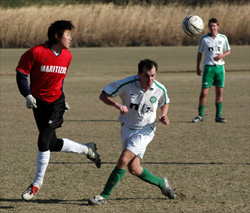
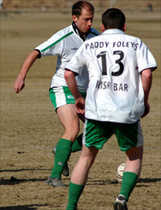

|
Misato, Sun 12th February. At a blustery,to say the least, Misato, the Kanto Celts moved back on top of the league with a 2-0 win over Maritzio.
The Celts lacked a few regulars but the boys who came along gave it everything. John Conama in goal was solid and a vital save just before the end of the first half swung things for the Celts.
The Back four of Ruari 'the speed demon' Hatchell, Ben,Gav and Richard were solid throughout. Midfield- Dermot, Magoo, Adam and Damo (married) ran their legs off, Takeshi and Neil up front were a constant menace.......sometimes!!
Celts, with the bare 11 V a busload of Martitzio lads thankfully won the toss and played into the wind in the first half and were up against it, with Maritzio coming close a few times. The Celts lucky not to concede a goal from a header at the end of the first half from Maritzio's centre forward.
The second half saw much of the play in Maritzio's half with the Celts taking advantage of the very strong wind. For the first 20 minutes neither side could get a hold of the game. Then, a free kick from the right taken by Ben was skillfully turned into the corner by Takeshi, making a welcome return to the Celts side and scoring his first goal, after 3 years of turning out for the Celts!

A minute later the Celts got a corner which Gav (Rooney) rose to meet with a header which went in off the underside of the bar.
With the Celts two up and a strong wind behind them the game fizzled out with neither team creating many chances. A battling performance from the Celts,with newcomer Richard having a great game at right back, Ruairi, Ben and Gav tight at the back. Midfield of Derm, Adam, Magoo and Damo(married!) doing lots of running and battling back. And Takeshi and Neill showing up well for the ball.
Man of the Match was a difficult choice but it has to go to John Conama with his first half save and then freezing his .... off in the second half!!
The season moves on to Super Saturday this weekend, 1st v 5th and 2nd V 3rd. With Shane lurking in 4th and still to play any of the top 3, there are a few twists in store between now and the end of the season.
Report - Ben Cliffe.
|